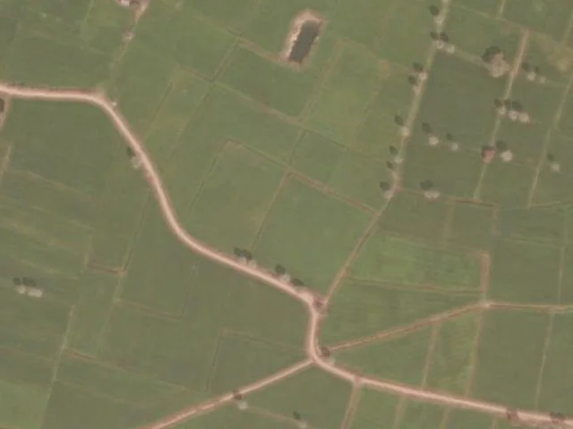
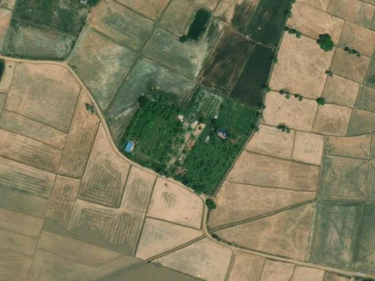

Food forest
ఆహార అడవి
Trees planted in layers on what was paddy land until 2021, so the ground stays covered and feeds itself.
2021 వరకు వరి పొలంగా ఉన్న నేలపై పొరలు పొరలుగా నాటిన చెట్లు. నేల ఎప్పుడూ కప్పి ఉంటుంది, తనను తాను పోషించుకుంటుంది.
Rural technology research · Suryapet, Telangana
గ్రామీణ సాంకేతిక పరిశోధన · సూర్యాపేట, తెలంగాణ
nela నేల soil, land · medha మేధ intelligence
నేల భూమి, మట్టి · మేధ తెలివి
Nelamedha researches rural technology that helps natural farming on the ground. On a working farm in Telangana we grow a food forest, build with earth, and teach small computers to look after the land, working towards a way of life that sustains itself end to end. What works here is written down and shared.
సహజ వ్యవసాయానికి నేల మీద నిజంగా ఉపయోగపడే గ్రామీణ సాంకేతికతపై నేలమేధ పరిశోధన చేస్తుంది. తెలంగాణలోని ఒక పని చేసే పొలంలో మేము ఆహార అడవిని పెంచుతున్నాం, మట్టితో ఇల్లు కడుతున్నాం, నేలను చూసుకునేలా చిన్న కంప్యూటర్లకు నేర్పిస్తున్నాం; మొదటి నుంచి చివరి వరకు తనను తాను నిలబెట్టుకునే జీవన విధానం వైపు. ఇక్కడ పనిచేసేది రాసి, అందరితో పంచుకుంటాం.
Each one feeds the next. The forest gives food, the earth under it becomes walls, and the machines keep watch so that a few people can look after a lot of land.
ఒకటి మరొకదానికి తోడ్పడుతుంది. అడవి ఆహారం ఇస్తుంది, దాని కింది మట్టి గోడలవుతుంది, కొద్దిమంది ఎక్కువ నేలను చూసుకోగలిగేలా యంత్రాలు కాపలా కాస్తాయి.
Trees planted in layers on what was paddy land until 2021, so the ground stays covered and feeds itself.
2021 వరకు వరి పొలంగా ఉన్న నేలపై పొరలు పొరలుగా నాటిన చెట్లు. నేల ఎప్పుడూ కప్పి ఉంటుంది, తనను తాను పోషించుకుంటుంది.
A house on the farm with no cement: cob, adobe and pressed-block walls under a tiled roof, running on rain, sun and biogas.
సిమెంటు లేని ఇల్లు: మట్టి ముద్దల గోడ, ఎండబెట్టిన మట్టి ఇటుకలు, ఒత్తిన మట్టి బ్లాకులు, పెంకుల పైకప్పు. వాన నీరు, సౌర శక్తి, బయోగ్యాస్తో నడుస్తుంది.
Soil-moisture sensors and small computers in the field, with AI that suggests the next job and a person who approves anything risky.
పొలంలో నేల తేమ సెన్సర్లు, చిన్న కంప్యూటర్లు. తదుపరి పని ఏమిటో AI సూచిస్తుంది; ప్రమాదం ఉన్న ఏ పనినైనా ఒక మనిషి ఆమోదిస్తారు.
The same ground, photographed from satellites in February 2021 and April 2025.
ఒకే నేల, 2021 ఫిబ్రవరిలో, 2025 ఏప్రిల్లో ఉపగ్రహాల నుంచి తీసిన చిత్రాలు.


All seven pictures, 2011 to 2025 →2011 నుంచి 2025 వరకు ఏడు చిత్రాలు →
Sensors, valves, fans and a small computer on the farm, powered by the sun and working without the internet. A greenhouse is the easiest place to learn what can be automated; what works there moves out to the forest.
సెన్సర్లు, వాల్వులు, ఫ్యాన్లు, ఒక చిన్న కంప్యూటర్, సౌర శక్తితో, ఇంటర్నెట్ లేకుండా పనిచేసేలా. ఏది ఆటోమేట్ చేయవచ్చో నేర్చుకోవడానికి గ్రీన్హౌస్ సులువైన చోటు; అక్కడ పనిచేసింది అడవిలోకి వెళ్తుంది.
The name, and this website at nelamedha.in.
పేరు, nelamedha.in లో ఈ వెబ్సైట్.
The no-cement house for the farm, priced part by part, with a build-along you can step through job by job.
సిమెంటు లేని ఫాంహౌస్ ప్రణాళిక, ప్రతి భాగం ధరతో, పని పని చొప్పున చూడగలిగే 3D నిర్మాణంతో.
Soil-moisture sensors reading through a Jetson Orin Nano, the first step of ClawMesh.
జెట్సన్ ఓరిన్ నానో ద్వారా నేల తేమ సెన్సర్ల రీడింగ్: క్లామెష్లో మొదటి అడుగు.
If you are planting a food forest, building with earth, want to try the sensors on your own land, or want to research with us, write or call.
మీరు ఆహార అడవి నాటుతున్నా, మట్టితో ఇల్లు కడుతున్నా, మీ నేలపై సెన్సర్లు ప్రయత్నించాలనుకున్నా, లేదా మాతో కలిసి పరిశోధన చేయాలనుకున్నా, రాయండి లేదా ఫోన్ చేయండి.